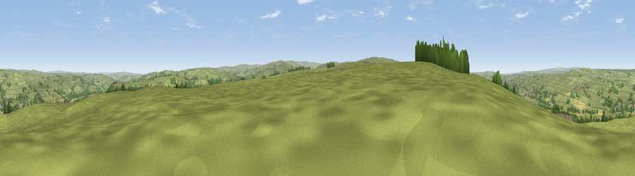

Viewpoint near Bardon Mill
#13501 in England · top 36% of its area beats it · near Bardon MillThe view, rendered

A 360° render of this exact spot computed from the terrain model, tree cover and land cover — summer colours, afternoon light, calibrated against photographs of famous viewpoints. Real trees, hedges and buildings will differ in detail.
The panorama
Grey silhouette: terrain skyline in each direction (720 bearings, Earth curvature and refraction included). Dashed green: skyline with trees (+15 m) and buildings (+8 m) as obstacles. Blue strip: how far the ground is visible on each bearing.
Where the view opens
Wedge length = distance to the farthest visible ground on that bearing (vegetation-aware). Rings at 10, 25 and 50 km.
What fills the view
87% grassland · 9% woodland · 2% cropland ·
Angular shares of the visible panorama (visual magnitude), not map area. Landscape diversity 0.21 (0–1 Shannon).
Key numbers
More beautiful places nearby
The staircase of upgrades: each row has a higher view potential than everything closer. Driving times are estimates from straight-line distance, calibrated against real road routing — check an actual route before setting out.
| Place | Direction | Drive | Score |
|---|---|---|---|
| Harsondale Law | E · 4 km | ~9 min | 59.8 |
| Viewpoint near Melkridge | W · 4 km | ~10 min | 61.1 |
| Viewpoint near Bardon Mill | N · 5 km | ~11 min | 64.1 |
| Thorngrafton Common | N · 5 km | ~11 min | 65.0 |
| Viewpoint c11151_7470 | SW · 6 km | ~12 min | 68.4 |
| Viewpoint near Melkridge | NNW · 7 km | ~14 min | 70.6 |
| Viewpoint near Bardon Mill | NNE · 9 km | ~17 min | 71.0 |
| Viewpoint near Halton Lea Gate | WSW · 14 km | ~26 min | 72.0 |
54.95010, -2.35711 · source: screening · position refined by local search. Computed location — check access rights before visiting.